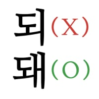

이제 비추단들 활동 안하나보네 ㅋㅋ
여캠 시절엔 안오는것 같던데
비추단도 좋으면 비추안함
그.. 특정 개붕이가 맨날 올려서 걔가 올리면 비추 몰리는것도 있음
음지시절은 개추임
qwer 안붙어있으면 비추단 활동 안하는 듯???
김계란 네이놈...!!!
네번째껀 짤린다 ㄷㄷ
돌려내!
내 아내임
잘 되서 좋지만 가끔은 내 트위치 닉 보고 오아시스 노래 한곡 뽑아주시던 때가 그립습니다

질 돼서 좃지만 기끔은 내 트위지 닉 부고 아오스시 노레 한국 뿝아주시든 떼가 그리읍니다
김계란!!!!

요렁건 누가 저장해놨다가 올리는겅미?
이런건 홍보하고 같이 봤어야지
왜 너 혼자 보고 이제와서 올리는데!!!
누군가에겐 양지였습니다
이쁘긴 진짜 개이쁨 앵간한 아이돌이나 배우들보다 이쁘고 몸매도 좋은거같음
오히려 왜 여태 연예인 안햇나 싶더라
난 김계란이 참 밉다